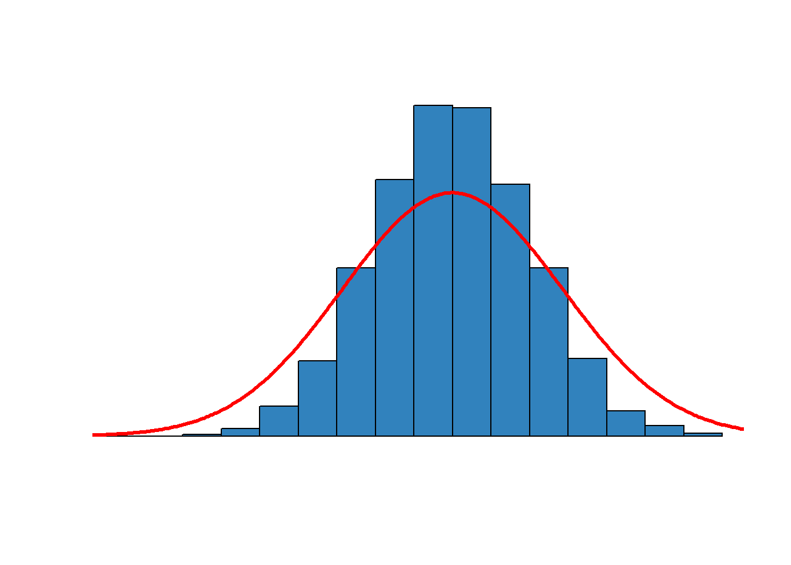
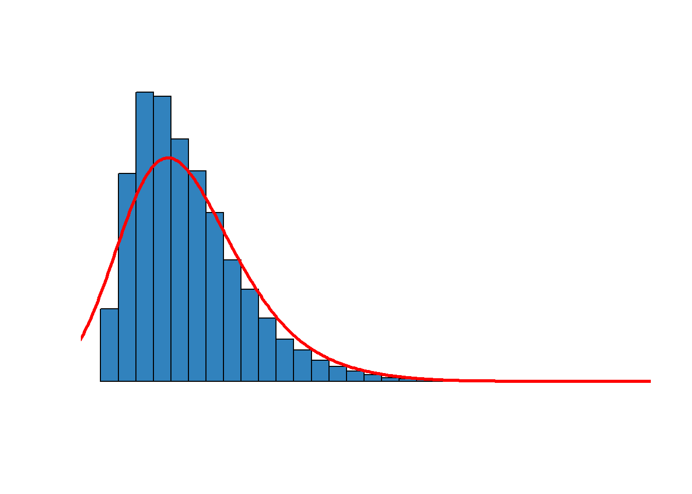
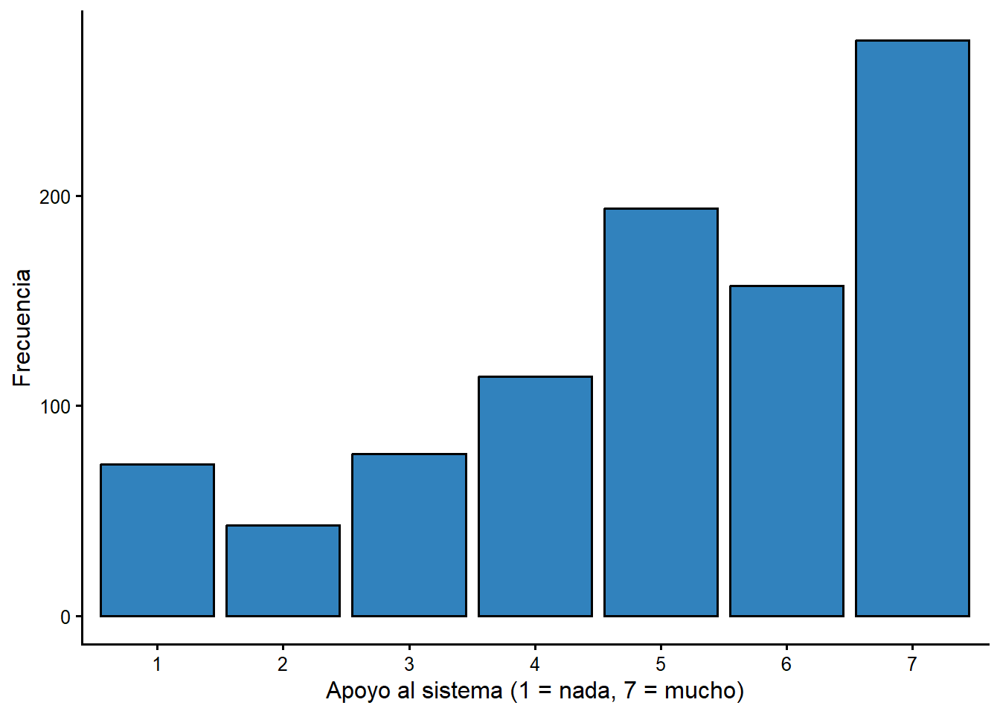
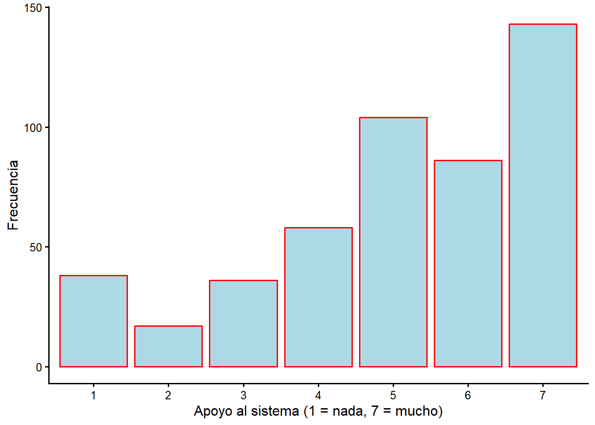
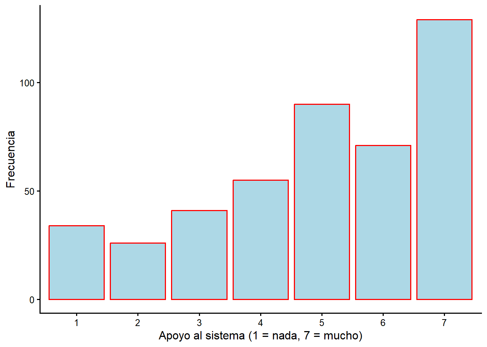

Capitulo 2 Estadistica descriptiva
Antes de aprender sobre pruebas estadisticas o modelos estadisticos, cubriremos algunas medidas basicas que se usan para describir datos. Las medidas basicas se dividen en dos categorias: medidas de tendencia central y medidas de dispersion. ¿Cual es el valor tipico de alguna variable? ¿Como se reparten o dispersan las observaciones alrededor de ese valor? Este capitulo tambien te introduce a la medicion del apoyo al sistema politico. La parte final se centra en interpretar y explicar la salida estadistica que describe la distribucion del apoyo al sistema en el electorado. Para una introduccion al significado e importancia de la identificacion partidaria, revisa “Americans Hate to Love Their Party, but They Do!” (Kaufmann, Petrocik, and Shaw 2008a).
2.1 Medidas de tendencia central
Una de las cosas comunes para las que usamos datos es hacernos una idea del valor tipico de alguna variable de interes. ¿Que porcentaje del estudiantado se gradua dentro de los cuatro anos posteriores a su primera matricula? ¿Que proporcion del electorado aprueba al presidente? ¿Que proporcion del electorado voto “si” en determinada propuesta? ¿Cual es el salario promedio de una persona egresada a mitad de carrera? ¿Estan mejor, en promedio, las personas que reciben un tratamiento medico que quienes no lo reciben? ¿Un programa de gobierno mejora a quienes participan?
2.1.1 Media
Casi todos aprendemos algo sobre el “promedio” muy temprano en la vida y asumo que te sientes comodo con el concepto e incluso con los calculos detras de un promedio. En estadistica, el promedio se denomina media.
Hay unos pocos simbolos matematicos que usaremos durante el curso. La formula de la media introduce dos de ellos: \(\mu\) (la letra griega con la que designaremos la media) y \(\sum\), la suma, que se usa de forma mas formal para especificar la suma desde la primera observacion hasta la n-esima:
\[\sum_{i=1}^n\]
Para calcular la media, simplemente sumas todos los valores de una variable para las observaciones de tu conjunto de datos y divides entre el numero total de observaciones. En simbolos, para cualquier variable X:
\[\mu=(\sum_{i=1}^nX_i) / n \]
2.1.2 Mediana
Una medida alternativa de tendencia central es la mediana. Todos conocen el percentil asociado a una calificacion. Si sacas el percentil 98, estas en el 2 % superior. La mediana es simplemente el percentil 50: tantos por encima como por debajo. La mediana no es necesariamente el punto medio de la escala; es el percentil 50 de las personas que observas. Podrias tener una escala de 1 a 7 donde las respuestas se agrupan por igual: un tercio en “1”, un tercio en “2” y un tercio en “3”. La mediana seria claramente “2”, aunque el punto medio de la escala 1-7 sea “4”.
Si una distribucion es sesgada (a la izquierda o a la derecha), suele usarse la mediana como medida de tendencia central en lugar de la media. Usamos la mediana, por ejemplo, para describir la tendencia central del ingreso de los hogares. Si tuvieras un barrio de 100 hogares, todos con ingresos cercanos a $50.000, el ingreso promedio seria $50.000 y la mediana tambien. Si se mudara un hogar de altos ingresos ($1,5 millones al ano), el promedio subiria $15.000, pero la mediana seguiria casi igual, un poco por encima de $50.000.
2.1.3 Moda
Una tercera medida de tendencia central es la moda. La moda es simplemente la respuesta mas frecuente. Esta medida es obviamente mas util cuando una sola respuesta describe a un gran numero de observaciones.
2.1.4 La distribucion normal es un caso especial
En el caso especial de una distribucion normal (o curva en forma de campana), la media, la mediana y la moda son el mismo numero. La Figura 2.1 reproduce una distribucion normal. Las respuestas son simetricas: tantas por encima como por debajo del promedio, y con mas respuestas justo en el promedio. Esta distribucion no describe a todas las variables que observamos, por lo que tambien tiene sentido pensar que medida de tendencia central puede ser util para datos con otras distribuciones.
Figura 2.1 La distribucion normal

Figura 2.1. La distribucion normal
La Figura 2.2 reproduce una distribucion sesgada hacia la derecha, es decir, hacia el pequeno numero de valores muy altos. En este caso, la media seria mayor que la moda o la mediana, porque unos pocos valores muy grandes inflan la media. Si quisieras reportar un valor tipico, la mediana seria un numero mas preciso.
Figura 2.2 Una distribucion sesgada

Figura 2.2. Una distribucion sesgada
2.2 Medidas de dispersion
Ademas de entender cual puede ser un valor tipico, tambien queremos saber si muchas observaciones se agrupan alrededor de un conjunto de numeros o si estan repartidas o dispersas en muchas respuestas distintas. Para hacernos una idea, usamos medidas de dispersion.
2.2.1 Varianza
La forma mas comun de describir la dispersion es la varianza. Para cualquier variable X, la varianza (designada \(\sigma^2\)) se calcula una vez que conocemos la media.
\[\sigma^2 = \frac{n}{n-1}\left( \frac{\sum_{i=1}^n (x_i - \mu)^2}{n}\right)\]
La varianza es, en palabras, el promedio de las distancias al cuadrado entre cada valor observado y la media muestral, ajustado por el tamano de la muestra. El segundo termino (\(n/n-1\)) implica que la varianza se infla en muestras pequenas (se ajusta por 5/4 con 5 observaciones), pero casi nada en muestras grandes (se ajusta por 1000/999 con 1.000 observaciones).
Esto se simplifica a:
\[\sigma^2 = \frac{\sum_{i=1}^n (x_i - \mu)^2}{n-1}\]
Lo primero que hay que notar es que, si todas las personas fueran identicas, la varianza seria cero, porque el valor individual de X de cada quien seria igual a la media. Si miraras la distribucion de edad en un aula y todas las personas tuvieran la misma edad, la varianza seria cero.
Punto clave: el tamano de la varianza (cero o grande) no dice nada sobre el nivel de X. Puedes tener varianza cero en un grupo de personas mayores (edad promedio alta) o de personas jovenes (edad promedio baja). Al comparar dos grupos, el grupo con mayor varianza esta mas repartido entre las respuestas posibles, y el de menor varianza esta mas concentrado en unas pocas categorias cerca de la media.
2.2.2 Desviacion estandar
Por lo general no reportamos la varianza, sino que usamos la desviacion estandar. La desviacion estandar (\(\sigma\)) es simplemente la raiz cuadrada de la varianza. Varianza = 4 significa desviacion estandar = 2.
¿Por que no reportar y usar la varianza? La desviacion estandar es preferible porque su unidad de medida es la misma que la de la media. Si reportas que la edad media de un grupo de estudiantes es 22 anos, es util reportar una medida de dispersion tambien medida en anos y no en anos al cuadrado. Como elevamos al cuadrado la diferencia de cada observacion, la metrica de la varianza siempre es X2, que no es tan facil de explicar como algo escalado igual que X.
2.3 ¿Cuando son utiles las estadisticas descriptivas?
2.3.1 Variables de intervalo (muy utiles)
Hay muchos tipos de variables: una encuesta puede registrar tu edad, raza, nivel educativo o genero. La edad es una escala en anos y la diferencia entre una persona de 25 y una de 30 (5 anos) es la misma que entre una de 55 y una de 60 (5 anos). Esto se conoce como variable de intervalo. Otros ejemplos incluyen el tiempo, la distancia, el peso, la temperatura o la presion.
2.3.2 Variables ordinales (utiles)
Algunas variables tienen un orden significativo, pero son una serie de categorias que indican mas o menos. El nivel educativo es un buen ejemplo: hay un orden y los valores mas altos indican mas educacion. En la encuesta del CIEP el nivel educativo se codifica en tres categorias: 1 = primaria o menos, 2 = secundaria y 3 = universitaria. Sabemos que un numero mas alto significa mas educacion, pero no podemos decir que la diferencia entre 1 y 2 sea igual a la diferencia entre 2 y 3. En general, las variables con orden significativo pero intervalos no uniformes se conocen como variables ordinales.
Tabla 2.1 Categorias de nivel educativo en el CIEP
| Significado | Numero |
|---|---|
| Primaria o menos | 1 |
| Secundaria | 2 |
| Universitaria | 3 |
2.3.3 Variables categoricas (no utiles del todo)
El tercer tipo de variable solo asigna numeros a categorias, como la provincia o el sexo (el orden de las categorias es arbitrario). Se conocen como variables categoricas. Las estadisticas descriptivas no son utiles para variables categoricas, porque no tiene sentido tomar la media de ese tipo de variable: mayor o menor es solo un artefacto del numero que asignamos a cada categoria. Podrias usar la moda, pero no la mediana ni la media.
Las estadisticas descriptivas son mas utiles para variables de intervalo como la edad. Pueden ser utiles para variables ordinales, donde las categorias tienen un orden significativo (como estar muy de acuerdo o en desacuerdo con alguna afirmacion, o una escala de 1 a 7). Muchas de las medidas que usamos en ciencias sociales son ordinales: el orden importa, pero se vuelve difuso despues. Por eso aplicamos las herramientas de la estadistica sabiendo que nuestras medidas son de segunda mejor. Este es uno de los muchos retos de medicion que enfrentamos.
2.4 Un punto de partida: el apoyo al sistema politico
Todas las tareas y trabajos que prepares para este curso se basan en datos de la encuesta del CIEP-UCR de noviembre de 2020, un estudio de opinion publica con 969 personas. La encuesta informa el trabajo sobre comportamiento politico, apoyo al sistema y evaluacion de instituciones. La base de datos es de acceso publico y la usaremos durante todo el curso.
Si quieres ver el texto exacto de las preguntas u otros detalles, revisa el libro de codigos. Algunas variables pueden incluir respuestas como “No sabe” o “No responde”. El libro de codigos puede indicar que esas respuestas estan asociadas a un numero, pero las tratamos como valores faltantes.
El apoyo al sistema politico se mide con una pregunta que pide a las personas
ubicarse en una escala de 1 a 7, donde 1 significa “Nada” y 7 “Mucho”, al
responder si apoyan el sistema politico costarricense (variable b6).
2.4.1 El apoyo al sistema en 2020
Las respuestas individuales de la encuesta se resumen en la Tabla 2.2. Observa que la tabla excluye los valores faltantes, es decir, las personas que no respondieron la pregunta.
Tabla 2.2 Tabla de frecuencias del apoyo al sistema, 2020
| Respuesta | n |
|---|---|
| 1 | 72 |
| 2 | 43 |
| 3 | 77 |
| 4 | 114 |
| 5 | 194 |
| 6 | 157 |
| 7 | 274 |
La tabla de frecuencias anterior solo da el numero de personas en cada categoria, pero normalmente nos interesa mas el porcentaje. La tabla siguiente mejora la anterior de dos maneras. Ademas de calcular el porcentaje, etiqueta las respuestas (asi puedes ver, por ejemplo, que “1” es “Nada” y “7” es “Mucho”). Esta es nuestra mejor estimacion de la distribucion del apoyo al sistema en la poblacion adulta de Costa Rica.
Tabla 2.3 Apoyo al sistema politico en 2020
| Apoyo al sistema | Porcentaje |
|---|---|
| 1 | 7.7 |
| 2 | 4.6 |
| 3 | 8.3 |
| 4 | 12.2 |
| 5 | 20.8 |
| 6 | 16.9 |
| 7 | 29.4 |
Tambien podriamos resumir estos numeros con un grafico de barras. El grafico destaca el hecho (sorprendente para algunos) de que la respuesta mas frecuente es el valor mas alto de la escala, 7 (“Mucho apoyo”). La tabla confirma que hay bastante mas apoyo en el extremo alto que en el extremo bajo de la escala.
Figura 2.3 Apoyo al sistema politico, 2020

Figura 2.3. Apoyo al sistema politico costarricense, 2020
Es claro que la moda es 7, y que el electorado en su conjunto se inclina hacia el extremo de mayor apoyo al sistema: la mayoria de las respuestas se concentran en los valores 5, 6 y 7. Esta es una buena forma de ver la distribucion y de comunicar la idea de que el electorado apoya, en terminos generales, al sistema politico. Pero necesitamos una forma mas precisa de describir esta distribucion y de comparar las distribuciones que observemos en dos grupos distintos.
2.4.2 ¿Como ha cambiado esta distribucion en el tiempo?
Podrias tener curiosidad por la proporcion del electorado que apoya al sistema politico hoy, comparada con lo que se observaba en el pasado. Para responder eso necesitariamos encuestas comparables a lo largo de varios anos, como las que hace el proyecto ANES en Estados Unidos o el propio CIEP en Costa Rica. Como este curso se centra en una sola encuesta, dejamos esa comparacion historica como una extension y trabajamos con el corte transversal de 2020. Si te interesa la comparacion en el tiempo, revisa las series del CIEP y del Latin American Public Opinion Project (LAPOP).
2.5 ¿Como podemos usar las estadisticas descriptivas?
La salida que usaras en los trabajos incluye, ademas del grafico de barras, dos tablas:
- la distribucion de frecuencias, el porcentaje de personas en cada categoria; y
- las estadisticas descriptivas.
La Tabla 2.4 reproduce las estadisticas descriptivas que resumen el apoyo al sistema politico en el electorado de 2020.
Tabla 2.4 Estadisticas descriptivas del apoyo al sistema, 2020
| Media | 5.02 |
| Mediana | 5.00 |
| Moda | 7.00 |
| Varianza | 3.46 |
| Desviacion estandar | 1.86 |
Estos numeros nos dicen varias cosas interesantes sobre el apoyo al sistema.
Primero, observa la moda (moda = 7). La respuesta mas frecuente es el maximo apoyo al sistema, como se ve tambien en el grafico de barras.
Segundo, el punto medio de la escala es 4. Como la media de la muestra es 5,02, el electorado se ubica claramente por encima del punto medio: en promedio, apoya al sistema politico.
Finalmente, la mediana es 5, lo que significa que el percentil 50 esta en la categoria 5. Los porcentajes lo confirman: mas de la mitad de las respuestas estan en las categorias 5, 6 y 7.
La desviacion estandar del electorado completo es 1,86. Esto no dice mucho por si solo, pero podemos usar este numero como referencia para comparar grupos. Si observas un grupo con una desviacion estandar mayor que 1,86, ese grupo esta mas repartido (mas polarizado) que el electorado en su conjunto. Si observas una desviacion estandar menor, el grupo esta mas concentrado en unas pocas categorias.
2.6 Comparar dos grupos
En muchos casos nos interesa menos el electorado en su conjunto y mas la distribucion de alguna variable en un grupo particular. Para aislar y examinar un grupo seleccionamos un subconjunto de casos. A continuacion comparamos el apoyo al sistema politico de dos grupos: mujeres y hombres. La expectativa de los medios suele sugerir que mujeres y hombres tienen preferencias politicas distintas. Veamos exactamente que tan diferentes son.
La salida reproduce las frecuencias y las estadisticas descriptivas para mujeres y hombres. El grafico y la primera tabla contienen exactamente la misma informacion, presentada de dos maneras. Deberias usar tanto los porcentajes como las estadisticas en tus trabajos.
2.6.1 Mujeres, encuesta CIEP 2020

| Apoyo al sistema | Frecuencia (porcentaje) |
|---|---|
| 1 | 7.88 |
| 2 | 3.53 |
| 3 | 7.47 |
| 4 | 12.03 |
| 5 | 21.58 |
| 6 | 17.84 |
| 7 | 29.67 |
| Estadisticas descriptivas | |
|---|---|
| Media | 5.08 |
| Mediana | 5.00 |
| Moda | 7.00 |
| Varianza | 3.36 |
| Desviacion estandar | 1.83 |
2.6.2 Hombres, encuesta CIEP 2020

| Apoyo al sistema | Frecuencia (porcentaje) |
|---|---|
| 1 | 7.62 |
| 2 | 5.83 |
| 3 | 9.19 |
| 4 | 12.33 |
| 5 | 20.18 |
| 6 | 15.92 |
| 7 | 28.92 |
| Estadisticas descriptivas | |
|---|---|
| Media | 4.95 |
| Mediana | 5.00 |
| Moda | 7.00 |
| Varianza | 3.56 |
| Desviacion estandar | 1.89 |
2.6.3 Interpretar las estadisticas descriptivas
2.6.3.1 Media
Observa que, aunque la media de ambos grupos esta alrededor de 5, esas respuestas no son tipicas: las respuestas mas frecuentes son 7 (y, en segundo lugar, 5). Asi que “promedio” no significa “tipico” cuando miras una distribucion que se concentra en los extremos. Las medias son cercanas: 5,08 para mujeres y 4,95 para hombres. Esto sugiere de inmediato que cualquier expectativa de que mujeres y hombres son mundos aparte en su apoyo al sistema esta muy lejos de la realidad.
2.6.3.2 Moda y mediana
Las estadisticas si revelan algunas diferencias: ambos grupos comparten la misma moda (7, “mucho apoyo”) y la misma mediana (5). Las diferencias son pequenas.
2.6.3.3 Desviacion estandar
Ambos grupos se reparten a lo largo de las siete categorias, en lugar de concentrarse en unas pocas cerca de la media. La desviacion estandar es ligeramente menor en mujeres (1,83) que en hombres (1,89), lo que sugiere que las mujeres estan un poco mas concentradas en las categorias mas altas.
2.6.4 Poniendolo todo junto
Las mujeres apoyan ligeramente mas al sistema politico que los hombres: la media para mujeres es 5,08 mientras que para hombres es 4,95. La mediana es 5 en ambos grupos. La desviacion estandar de ambos grupos es muy parecida (cerca de 1,8), asi que la dispersion es similar. Para describir por completo el apoyo al sistema de cada grupo usamos las estadisticas descriptivas y los porcentajes. Podemos ser mucho mas precisos en nuestras comparaciones con estos numeros, en lugar de describir solo si una distribucion es sesgada o si un grupo tiene mas apoyo que otro.
2.7 ¿Que sigue?
La forma en que abordamos las diferencias de grupo en este capitulo fue deliberada y sistematica: planteamos expectativas o hipotesis que contrastar. Basados en la cobertura de los medios, esperabamos que mujeres y hombres tuvieran apoyos muy distintos al sistema. Resulto que no. Cuando se trata del comportamiento humano basico, seria dificil sostener que mujeres y hombres son fundamentalmente diferentes, al menos en formas politicamente relevantes.
Un segundo reto del enfoque de este capitulo es que solo describimos diferencias en la muestra del CIEP. ¿Como sabemos si estas diferencias, que son bastante pequenas, dicen algo sobre la poblacion mas amplia de mujeres y hombres en Costa Rica? Necesitamos formas de contrastar si las diferencias de grupo que observamos permiten hacer una inferencia sobre las diferencias de grupo en la poblacion. Ese es el foco de los siguientes capitulos.